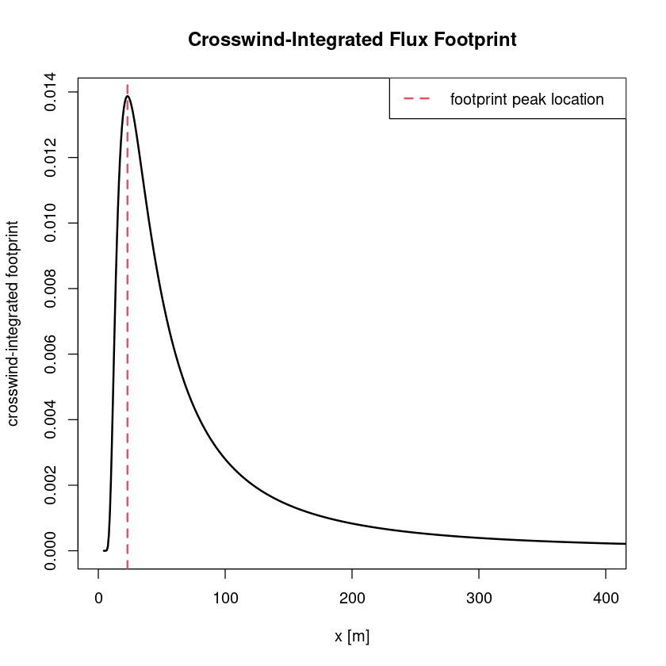
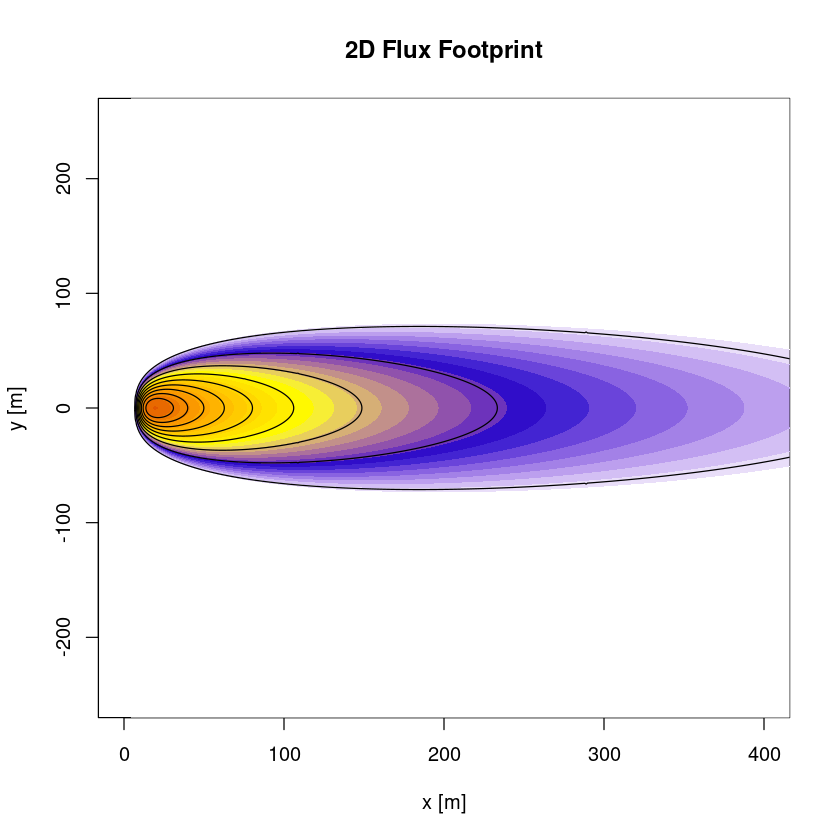

7 Flux footprint
7.1 Flux footprint parametrizations
The calculation of a 2d flux footprint makes it possible to estimate the size of the surface that contributes to the measured flux. This also allows to analyze whether changes in the flux result from a change in the footprint (e.g. surface composition, vegetation, surface roughness). Here the flux footprint parametrization according to Kljun et al. (2015) is used.
The mathematical idea for deriving a flux footprint parametrization is to express the flux (\(F_c\)) as integral over the distribution of its sinks and sources (\(S_c\)) times a transfer function \(f\) (the flux footprint):
\[
F_c(0,0,z) = \int\int S_c(x,y) f(x,y) \:dx\,dy
\]
By treating streamwise and crosswise velocity independently, the footprint can be expressed as product of the crosswind-integrated footprint (\(\overline{f^y}(x)\) which is then only a function of \(x\)) and a function expressing the crosswind dispersion (\(D_y\)) through
\[
f(x,y) = \overline{f^y}(x)D_y.
\]
This assumption leads to a symmtric footprint in crosswind direction. For further derivations a concrete footprint model has to be applied, which is in Kljun et al., 2015 an advanced Lagrangian particle dispersion model (LPDM-B) based on 3d particle backtracking between surface and boundary layer height \(h\) that is valid for steady flows under all stabilities.
#load Reddy package
install.packages("../src/Reddy_0.0.0.9000.tar.gz",repos=NULL,source=TRUE,quiet=TRUE)
library(Reddy)
#read in processed example data
dat=readRDS("../data/ec-data_30min_processed/processed_data_example.rds")
#select file
i=8 #daytime example7.2 2D flux footprint estimate
7.2.1 Calculate 2D flux footprint estimate with calc_flux_footprint
The function calc_flux_footprintuses the 2d flux footprint parametrization (FFP) according to Kljun et al. (2015) to calculate the footprint based on measurement height zm, mean horizontal wind speed u_mean, boundary layer height h, Obukhov length L (calc_L), standard deviation of cross-wind component v_sd and either friction velocity ustar(calc_ustar) or surface roughness length z0 in a resolution given by nres. The boundary layer height can be taken from e.g. ERA5.
ustar=calc_ustar(dat$cov_uw,dat$cov_vw)
L=calc_L(ustar,dat$T_mean,dat$cov_wT)
zm=4.4
h=700
ffp=calc_flux_footprint(zm,dat$u_mean[i],h,L[i],dat$v_sd[i],ustar[i])
str(ffp)List of 9
$ xmax : num 23
$ x : num [1:999] 4.38 5.17 5.96 6.76 7.55 ...
$ fy_mean : num [1:999] 3.43e-20 3.60e-10 5.56e-07 1.85e-05 1.37e-04 ...
$ x2d : num [1:1499, 1:999] 4.38 4.38 4.38 4.38 4.38 ...
$ y2d : num [1:1499, 1:999] -592 -591 -590 -589 -589 ...
$ f2d : num [1:999, 1:1499] 0 0 0 0 0 0 0 0 0 0 ...
$ xcontour :List of 9
..$ : num [1:1573] 6.76 6.75 6.72 6.7 6.69 ...
..$ : num [1:815] 7.55 7.48 7.42 7.38 7.35 ...
..$ : num [1:543] 8.34 8.25 8.16 8.08 8.03 ...
..$ : num [1:397] 9.13 9.03 8.91 8.81 8.73 ...
..$ : num [1:307] 9.92 9.78 9.64 9.52 9.43 ...
..$ : num [1:235] 10.7 10.7 10.5 10.3 10.2 ...
..$ : num [1:181] 11.5 11.3 11.2 11 11 ...
..$ : num [1:133] 12.3 12.2 12.1 12 12 ...
..$ : num [1:87] 13.9 13.8 13.7 13.7 13.7 ...
$ ycontour :List of 9
..$ : num [1:1573] -2.39 -2.37 -1.58 -0.79 0 ...
..$ : num [1:815] -4.56 -3.95 -3.16 -2.37 -1.58 ...
..$ : num [1:543] -6.14 -5.53 -4.74 -3.95 -3.16 ...
..$ : num [1:397] -6.85 -6.32 -5.53 -4.74 -3.95 ...
..$ : num [1:307] -6.95 -6.32 -5.53 -4.74 -3.95 ...
..$ : num [1:235] -6.48 -6.32 -5.53 -4.74 -3.95 ...
..$ : num [1:181] -5.45 -4.74 -3.95 -3.16 -2.37 ...
..$ : num [1:133] -3.37 -3.16 -2.37 -1.58 -0.79 ...
..$ : num [1:87] -1.91 -1.58 -0.79 0 0.79 ...
$ contour_levels: num [1:9] 0.9 0.8 0.7 0.6 0.5 0.4 0.3 0.2 0.17.2.2 Plotting of flux footprint with plot_flux_footprint
The function plot_flux_footprint takes as input an obeject returned by calc_flux_footprint and plots the cross-wind integrated footprint and the 2d footprint.
plot_flux_footprint(ffp)

Flux footprint climatologies can be create as composite footprints by averaging over several FFP calculations, see the dedicated webpage https://www.footprint.kljun.net/. The flux footprint can then be plotted on an aerial photo or a ecosystem type classification, see e.g. Kljun et al. (2015) therein Fig. 5 or Pirk et al. (2023) therein Fig. 4.
References
Kljun, N., P. Calanca, M. W. Rotach, and H. P. Schmid. 2015. “A simple two-dimensional parameterisation for Flux Footprint Prediction (FFP).” Geosci Model Dev 8: 3695–3713.
Pirk, N., K. Aalstad, Y. A. Yilmaz, A. Vatne, A. L. Popp, P. Horvath, A. Bryn, et al. 2023. “Snow-Vegetation-Atmosphere Interactions in Alpine Tundra.” Biogeosciences 20: 2031–47. https://doi.org/10.5194/bg-20-2031-2023.